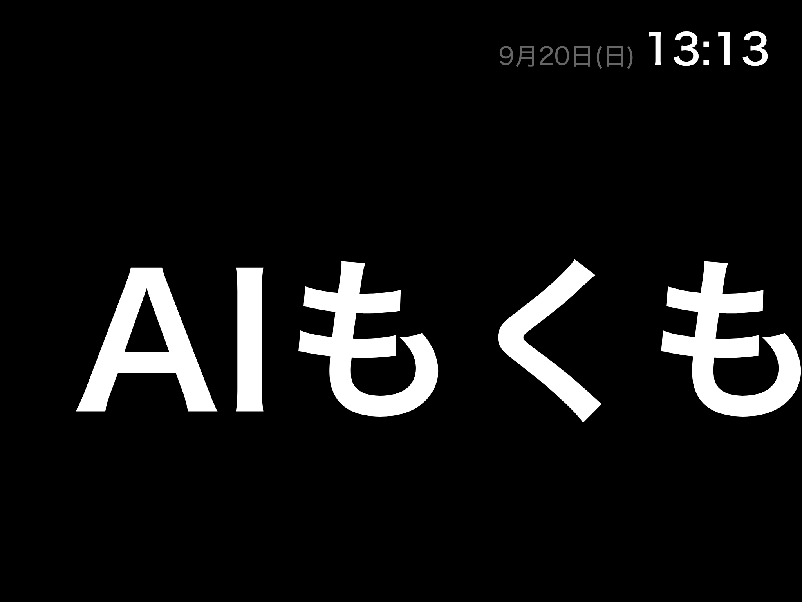

使っていない iPad を、住人みんなが書き込める掲示板にした話。
作ったもの・使い方・中身・AI との作り方。
signboard.emaker.dev
文字は流せる。ただし内容を変えるには iPad 本体を触るしかない。リビングまで行って、アプリを開いて、キーボードで打ち直す。
自分の部屋から、スマホから、Discord から。どこにいても書き換えられる掲示板。iPad は置きっぱなしで触らない。

実際の画面。Safari で「ホーム画面に追加」して全画面表示している。
/signboard post と打つだけ。いちばん手軽で、たぶんこれしか使わない。
どれで書いても同じ掲示板に出る。誰が書いたかは記録に残る。
# 24時間表示される（既定） /signboard post text:土曜に共用部の大掃除やります。10時集合 # 12時間だけ表示する /signboard post text:明日は断水します hours:12 # いま流れているものを確認する /signboard list
期限が来たら自動で消える。古いお知らせが残り続けて、誰も読まない掲示板になるのを防ぐため。
Discord のロールをそのまま権限に使っている。新しい住人が入ったらロールを付けるだけ。アカウントを別に作る必要はない。
投稿・編集・削除・設定変更を記録している。消したお知らせの本文も追える。この記録自体は消せない。
いたずら防止というより、後から「あれ誰が書いたんだっけ」を追えるようにするため。
Web サーバーも Discord Bot も同じプロセス。データは SQLite ファイル1個。ハウス内の Ubuntu で動いていて、外部サービスの課金はない。
2016年の機種で、OS はこれ以上上がらない。Safari 16 で動かないものは使えない。メモリ 2GB で、24時間つけっぱなしにする。
掲示板の画面は素の HTML・CSS・JavaScript。ビルドしないので、そもそも互換性の問題が起きない。デプロイも git pull だけで済む。
サーバー側は Node + Hono + SQLite。住人数十人・お知らせ数十件の規模に Postgres は要らない。
Discord / 管理画面 / API
│
↓ 書き込み
┌─────────┐
│ サーバー │ ── SSE ──→ iPad「変わったよ」
└─────────┘ │
↑ │
└──── 取り直す ←─────────┘
サーバーからは「変わった」という合図だけを送り、中身は送らない。iPad 側が改めて取りに行く。取得経路が1本になるので、再接続してもズレない。
動いているのは GUI も立ち上がっている兼用マシン。自動更新で勝手に再起動することもある。常時稼働は最初から期待していない。
掲示板が数分止まっても誰も困らない状態にしておく、という方針。
コードはほぼ全部 AI が書いた。人間がやったのは、要件を答えること・方針を決めること・各段階で「いいよ」と言うこと。
一度に3〜5問まで、何往復かに分けて。答えを SPEC.md にまとめさせ、承認してから次へ。
選択肢を2〜3案とトレードオフ。実装は縦切りの9ステップに分け、各ステップに機械的に検証できる受け入れ条件を付ける。
完了ごとに受け入れ条件の結果を報告させ、こちらが確認してから次へ。計画から外れそうなら止めて相談させる。
会話が途切れても文脈が消えない。実際この開発でも、途中で接続が切れたり別の話題を挟んだりしたが、ファイルを読めば続きから再開できた。
tsc は素通りする。どれも「書けているか」ではなく「実際に動かしたか」で見つかったもの。受け入れ条件を機械で確認できる形にしておくのが効いた。
「サーバーは常時稼働が保証されない兼用機」と分かったのが設計前だったので、オフライン耐性を最優先に据えられた。作ってから気付くと作り直しになる。
「テストが通る」「curl で 200 が返る」「2回実行して差分が出ない」。曖昧な完了報告にならず、人間は結果を見るだけで済む。
要件を聞くところから、ドメインを付けて公開するところまで。土日の空き時間で終わる規模になった。
systemd の unit、バックアップの世代管理、運用手順書。人間だけだと後回しになりがちな部分が最初から揃った。
Discord に一言打つだけ。期限が来たら勝手に消える。
1プロセス、SQLite 1ファイル、ビルドなし。月額0円。
仕様→計画→実装の順に、AI が書いて人間が確認。
github.com/EngineMaker/signboard · signboard.emaker.dev